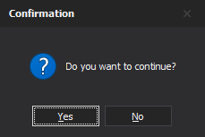
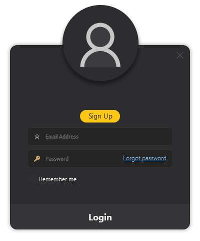

Common Dialogs
Common dialogs provide a standardized way to interact with users for frequently required tasks such as displaying messages, collecting input, and performing authentication.
The UI framework exposes these dialogs through the ICommonDialogFactory, ensuring a consistent and extensible API.
Overview
The following dialogs are supported:
| Dialog | Description |
|---|---|
| Message Box | Displays information, warnings, errors, or confirmation prompts |
| Input Box | Collects user input using configurable editors |
| Login Dialog | Authenticates users using custom logic |
All dialogs are created using the ICommonDialogFactory.
Working with Common Dialog Factory
The Common Dialog Factory provides a unified way to create and display commonly used dialogs such as:
- Message boxes
- Input boxes
- Login dialogs
Getting Started
To use the Common Dialog Factory, first obtain an instance of IUIFactoryService and access the CommonDialogFactory property.
IUIFactoryService uiFactoryService = new UIFactoryService();
ICommonDialogFactory dialogFactory = uiFactoryService.CommonDialogFactory;
Showing a Message Box
Use the factory to create message box arguments and display the dialog.
// Create arguments
IMessageBoxArgs args = dialogFactory.CreateMessageBoxArguments();
args.Owner = this;
args.Caption = "Confirmation";
args.Content = "Do you want to continue?";
args.Buttons = new[]
{
System.Windows.Forms.DialogResult.Yes,
System.Windows.Forms.DialogResult.No
};
args.DefaultButtonIndex = 0;
args.MessageBoxIcon = MessageBoxIcon.Question;
// Create and show message box
using (IMessageBox messageBox = dialogFactory.CreateMessageBox())
{
DialogResult result = messageBox.Show(args);
if (result == DialogResult.Yes)
{
// Handle Yes
}
}

Showing an Input Box
Input boxes require an editor to define the type of input.
// Get editor factory
IInputEditorFactory editorFactory = uiFactoryService.InputEditorFactory;
// Create editor
ITextInputEditor editor = editorFactory.CreateTextEdit();
editor.Configure(typeof(string));
// Create arguments
IInputBoxArgs args = dialogFactory.CreateInputBoxArguments(editor);
args.Caption = "Input Required";
args.Prompt = "Enter your name";
// Create and show input box
using (IInputBox inputBox = dialogFactory.CreateInputBox(args))
{
if (inputBox.Show(this) == DialogResult.OK)
{
object value = inputBox.InputResult;
// Process value
}
}

Showing a Login Dialog
The login dialog requires an implementation of ILoginHandler to handle authentication logic.
Step 1: Implement the Login Handler
public class LoginHandler : ILoginHandler
{
public string Email { get; set; }
public string Password { get; set; }
public bool Login(out string reason)
{
if (Email == "admin@example.com" && Password == "admin")
{
reason = string.Empty;
return true;
}
reason = "Invalid email or password.";
return false;
}
}
Step 2: Create and Show the Dialog
ILoginHandler handler = new LoginHandler();
ILoginDialog dialog = dialogFactory.CreateLoginDialog(handler);
dialog.EnableSignUpButton = true;
dialog.SignupButtonClick += SignupButtonClickHandler;
dialog.ForgotPasswordClick += ForgotPasswordClicHandler;
if (dialog.ShowDialog(this) == DialogResult.OK)
{
// Login successful
}
Step 3: Handle SignUp and Forgot Password
private void ForgotPasswordClicHandler(object sender, EventArgs e)
{
// handle forgot password click
}
private void SignupButtonClickHandler(object sender, EventArgs e)
{
// handle sign up click
}
